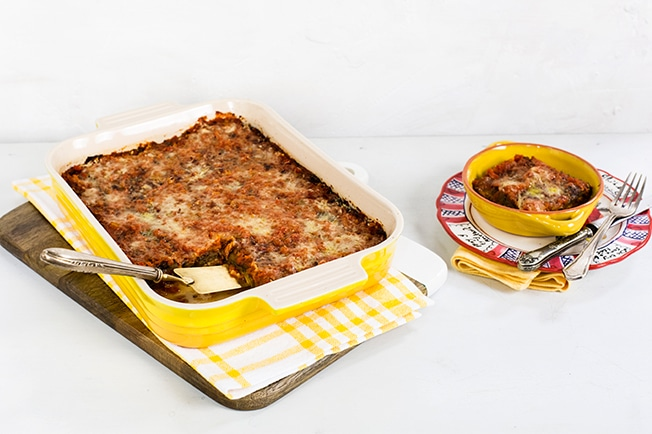
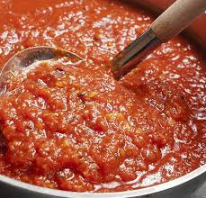

Lasagna de Berinjela com molho de tomate caseiro

A Lasagna é uma receita clássica italiana. É praticamente impossível alguém não apreciar uma boa Lasagna.
Essa receita é um pouco diferente. A massa será feita com a berinjela e o molho será feito com tomates italianos.
Ingredients
- 6 Tomates italianos
- 4 berinjelas
- 300 gramas de mussarela ralada
- Queijo Parmesão ralado
- Sal a gosto
- pimenta a gosto
- Azeite de oliva
- 2 dentes de alho
- 1 Cebola
- Manjericão
Modo de preparo:
Molho de tomate caseiro
Fazer um molho de tomate caseiro não é nada complicado. Com bons tomates e bons tempeiros, o seu molho ficará delicioso!
- Retire a casca do tomate queimando-a com a chama do fogo.
- Doure a cebola em fogo médio com um fio de azeite e depois acrescente alho.
- Após dourar o alho, acrescente os tomates devidamente picados e vá misturando e acrescentando azeite
- Não deixe secar, e queimar, deixe o tomate cozinhar no azeite e no próprio suco.
- tempere com o sal, pimenta e manjericão a gosto após o termino do cozimento.

prepro da lasagna
- Preaqueça o forno a 200°C.
- descarte o cabo da berinjela e faça cortes na direção do compimento, com mais ou menos 1cm de espessura.
- monte com a lasagna com o molho, beringela, molho, queijo muçarela. Repita até chegar ao topo.
- Finalize com molho e queijo parmesão.
- Leve ao forno por cerca de 35 min. Ou até o molho ferver e o queijo gratinar. Sirva quente.